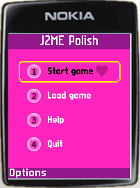

<%define inOverviewSection %>
<%set title = J2ME Polish: Overview %>
<%include start.txt %>
	
	<div id="content">
	<h1 id="top">Overview</h1>
	<%include news.txt %>


	<p><a href="news.html">more news...</a>.</p>
	<h2>What is J2ME Polish?</h2>
	<p>
		J2ME Polish is a build tool based on Ant and an advanced GUI for creating
		MIDP applications.<br/>
	</p>
		<table><tr>
		<td><a class="imageLink" href="screenshots.html"></a></td>
		<td><a class="imageLink" href="screenshots.html"></a></td>
		<td>These screenshots show the same application with two different
			designs. Have a look at the <a href="screenshots.html">screenshots-page</a>
			for more examples and details.
		</td>
		</tr></table>
		<ul>
			<li><a href="docs/build.html"><b>Build Tools</b></a>: 
				J2ME Polish compiles, preverifies, obfuscates and packages
				your application. Preprocessing and JAD creation
				are also done. J2ME Polish also contains a device
				database, which can be extended easily.
			</li>
			<li><a href="docs/optimization.html"><b>Device Optimization</b></a>: 
				Create standard MIDP applications
				and let J2ME&nbsp;Polish do the optimization work for you -
				automatically. 
			</li>
			<li><a href="docs/css.html"><b>CSS Design</b></a>: Use the webstandard CSS for designing your
				J2ME application. Simple text files control the
				outer appearance of your application. Designers
				can work independently of the programmers. The 
				design and all the content can be easiliy adjusted
				for specific devices or device groups.
			</li>
			<li><a href="docs/utilities.html"><b>Utilities</b></a>: Use some often needed utilities which are not available in the J2ME
				standard, e.g. the ArrayList or the debug tool.
			</li>
			<li><a href="docs/preprocessing.html"><b>Preprocessing</b></a>: 
				Create faster, leaner and device optimized applications
				with the power of preprocessing. Check and
				use device specifications within your code without
				using fixed code.</li>
			<li><a href="docs/utilities.html#logging"><b>Logging Framework</b></a>: 
			        Use the J2ME Polish logging framework with logging levels,
				detailed information and have a look at the log even on the
				device. And best of all: when it is not needed, the logging will
				use no memory and no processing power at all!
			</li>
		</ul>
	
	<h2 id="status">Status</h2>
	<p>J2ME Polish is currently a stable & complete build solution for J2ME.
	   Some parts of the GUI are still missing, but the GUI itself is stable as well.
		Please <a href="download.html">download</a> the latest version 
		(J2ME Polish <%= PolishVersion %>).
	</p>
<%include end.txt %>
